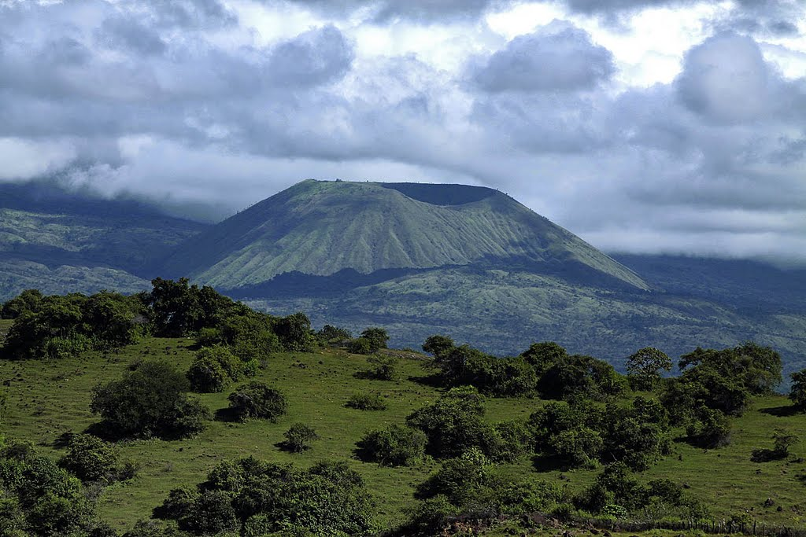

Top 1. Tambora(1815)

Description
Mount Tambora, or Tomboro, is an active stratovolcano in West Nusa Tenggara, Indonesia. Located on Sumbawa in the Lesser Sunda Islands, it was formed by the active subduction zones beneath it. Before 1815, its elevation reached more than 4,300 metres (14,100 feet) high, making it one of the tallest peaks in the Indonesian archipelago.
Tambora violently erupted in a series of eruptions beginning 5 April 1815, culminating in the largest eruption in recorded human history and the largest of the Holocene (10,000 years ago to present). The magma chamber under Tambora had been drained by previous eruptions and underwent several centuries of dormancy as it refilled. Volcanic activity reached a peak that year, culminating in an explosive eruption. The explosion was heard on Sumatra island, more than 2,600 kilometres (1,600 miles) away and possibly over 3350 km (2060 miles) away in Thailand and Laos. Heavy volcanic ash rains were observed as far away as Borneo, Sulawesi, Java, and Maluku islands, and the maximum elevation of Tambora was reduced from about 4,300 to 2,850 metres (14,110 to 9,350 feet). Although estimates vary, the death toll was at least 71,000 people. The eruption contributed to global climate anomalies in the following years, while 1816 became known as the "year without a summer" because of the impact on North American and European weather. In the Northern Hemisphere, crops failed and livestock died, resulting in the worst famine of the century.
History
Tambora is located 340 kilometres (210 mi) north of the Java Trench system and 180 to 190 kilometres (110 to 120 mi) above the upper surface of the active north-dipping subduction zone. Sumbawa Island is flanked to the north and south by oceanic crust. The convergence rate of the Australian Plate beneath the Sunda Plate is 7.8 centimetres (3.1 in) per year. Estimates for the onset of the volcanism at Mount Tambora range from 57 to 43 ka. The latter estimate published in 2012 is based on argon dating of the first pre-caldera lava flows.The formation of Tambora drained a large magma chamber pre-existing under the mountain. The Mojo islet was formed as part of this geological process in which Saleh Bay first appeared as a sea basin about 25,000 years BP.